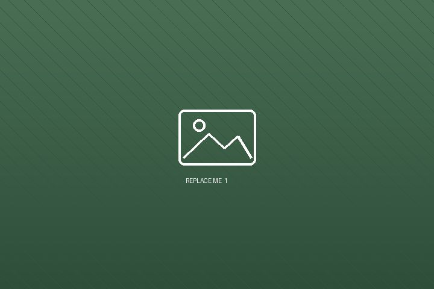
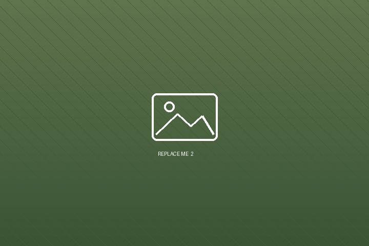
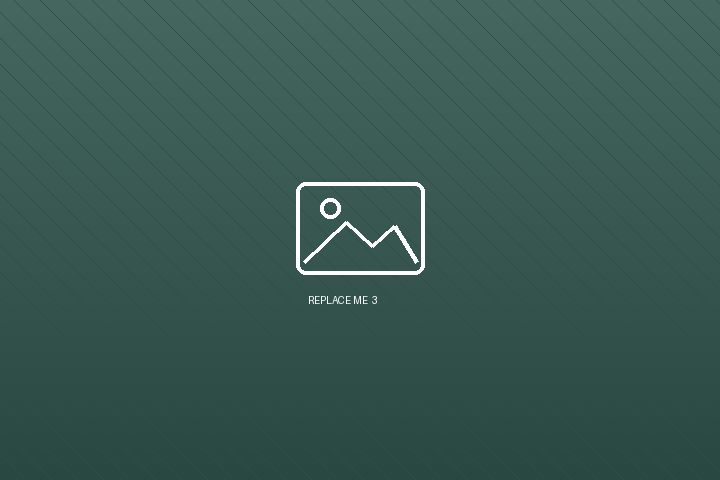

A centralized platform for encoding, tracking, and managing agricultural engineering projects — from proposal to completion.
One running count of the Division's projects — by stage, and by the kind of work being delivered. Pulled live from the projects, requirements, and progress records encoded in RAEDNIRMIS.



RAEDNIRMIS stands for the Regional Agricultural Engineering Division – Negros Island Region Management Information System. It is a centralized system designed to organize, monitor, and track the Division's agricultural engineering projects — from proposal to completion.
The system covers projects such as Farm-to-Market Roads (FMR), Small-Scale Irrigation Projects, agricultural infrastructure, farm machinery, and other engineering interventions.
With RAEDNIRMIS, every project is encoded at the proposal stage, allowing its requirements and supporting documents to be tracked and validated before funding or implementation. Once a project enters implementation, its progress and status are continuously monitored, updated, and documented until completion.